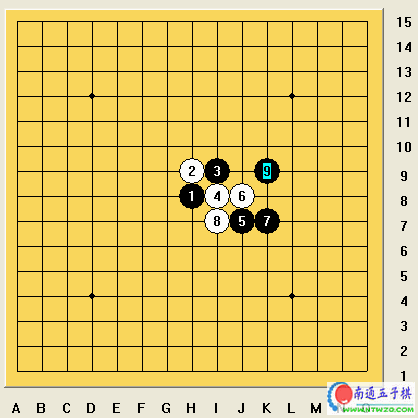

五子棋的开局是非常重要的，一般情况下，一盘棋的胜负，在很大程度上已经被开局所决定了，我个人的观点是这样认为的：在五子棋的开局里由且应该注意以下几个问题：
1、开局抢“2”：所谓开局抢“2”实际上是一个非常简单的道理，因为五子棋最通俗的来说，就是要把相同颜色的棋子在任何横、竖或者斜线的方向上连成5个子就胜出了，这个游戏就简单到这个地步，但因为有了对方的各种阻挡应变，又叫连“5”这一最最简单的事情变的复杂和千变万化了。怎样才能连成5呢？那么你首先得有“2”，因为在五子棋里“2”是最基本的也是“连”的最小单位。有了“2”才能有“3”，有“3”才能连“4”，有“4”才能成“5”。
在开局里双方的棋子本就很少，所以“2”的抢夺无疑就成了开局里双方优势争夺的关键中的关键。
下面我们以花月的一个开局变化来说明“2”的抢夺在开局中的重要性。

白4并不直接应黑斜二，而是模仿黑与白2共同组成一个斜二，这是在开局后虽然是后手，但直接进入开局抢二的争夺。
黑5是五手两打点之一，这个黑五点，并不成三，是因为在整体子力单薄的情况，单独的成一个三的意义并不大（这是指通常情况下来或的，花月成三是必赢）。相反有时候成了三，反而会帮对手把棋做厚。于是针对白的4手后，黑采用了暂时交出先手的做法，开始进行防守。但黑5的防守并不是被动的防守，而是与1、3手紧紧呼应相望。
白6手、8手的点都是黑后势发展的重要位置，所以白在黑5以后，立即丢掉了优势被动的进入了防守状态，应出了6手，白6手以后，可以看的出来，黑开始占局盘面的小优势，因为黑有了一个活2，但白一个都没有，所以我们说黑开始占据优势。
接下来黑做出7手变。黑7手的变化，是明显的要取外势，如果从开局抢2的原理来说，实际上应该是走在白8手的位置更好，因为黑7走在白8手的位置可以形成三个活2在棋盘上。但黑如果走在白8的位置，白棋势必会走在黑1下边的位置进行阻挡，于是白便再次开始有2，那么盘面上，黑3个2，白8以后白应住了一个黑2使黑只有2个2，而白就有了一个2，那么黑就并没有把前边的优势继续发展出来，所以这里黑走了现在7手的位置。
白8应，黑9挡，形成现在的棋型。
盘面分析：在现在的棋盘中，黑有了2个二，但白一个都没有，同时，黑有相当好的后续手发展，而且占据了外势的绝对优势。所以走到这里，白就陷入了几乎是绝对被动的局面，所以在后势的发展上，无论白怎么应，都是必输的形式了。
由此可见开局抢“2”是五子棋里相当重要的一个环节，也是决定胜负的关键环节之一。
原文从天元子的博客中转载
呵呵，好，可是我更想知道继续怎样
［ 有志青年 于 2007-7-11 15:31:26 时奖励此帖[金币加 20 威望加1］
［ 有志青年 于 2008-4-30 17:25:27 时奖励此帖[金币加 20 威望加1］
已经修复，谢谢！
 W
W